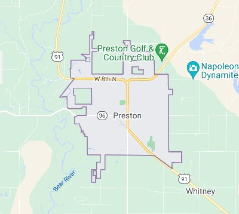

Preston
Weather Summary
Conditions:
Cloudy
Temperature:
47°F
Wind Chill:
Humidity:
63%
Wind Speed:
7 mph
5 Day Forecast
Thur
67°F
Fri
65°F
Sat
64°F
Sun
67°F
Mon
72°F
Preston Gridiron: Friday Night Watch
by Koralee Waite
The Preston High School Indian's have had a rough beginning. Pressure mounts with approaching Friday night game and the varsity team carrying four consecutive losses. Coach Peter Sloughburg predicts this will be their turn-a-round game, "While we have had some devastating losses, this game is going to be different. The offense has working tirelessly to tighten plays and our defense has a surprise in store for the Wild Hawks." Additionally, after being recruited from the soccer team, Sammy Hollins will be making his debut in the upcoming game as a needed kicker. Join us at Or Cuttler Field this Friday to cheer on the Indians!

📞 208.552.3122
📧 highcountryweather@preston.com


High Country Weather and Events
203 N State Street, Preston, Idaho 83263📞 208.552.3122
📧 highcountryweather@preston.com